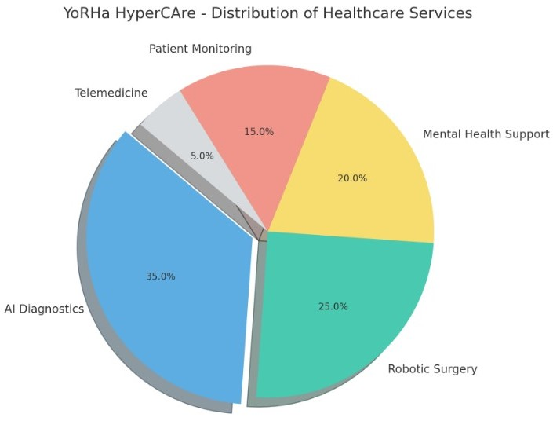

Research | Evidence
Supporting Articles
Author: Dr. Alex Johnson
Publication: Journal of Advanced Healthcare Technology
Summary: This article explores the advancements in human-machine integration, highlighting the benefits and potential challenges. It provides an in-depth analysis of recent technological breakthroughs and their implications for future healthcare practices. Dr. Johnson delves into how seamless integration can enhance human capabilities, providing both theoretical perspectives and practical applications. By examining case studies and recent experiments, this article offers a comprehensive overview of how human-machine integration can revolutionize healthcare.
Author: Dr. Emily Wong
Publication: International Journal of Mental Health Innovations
Summary: Dr. Wong discusses how emotionally intelligent AI can revolutionize mental health care by providing personalized emotional support and enhancing therapeutic outcomes. The article emphasizes the AI's ability to understand and respond to human emotions in real-time, creating more effective treatment plans. It also explores the potential ethical considerations and the future of AI in mental health, suggesting new avenues for research and development.
Author: Dr. Michael Carter
Publication: Robotics in Healthcare Review
Summary: This article examines the role of advanced robotics in surgical procedures, emphasizing improved precision, reduced recovery times, and enhanced patient outcomes. Dr. Carter provides insights into how robotic surgery systems work, the technologies behind them, and their benefits over traditional methods. The article also reviews several successful case studies, offering a glimpse into the future of surgical innovation.
Expert Opinions
Dr. Samantha Lee, Neurosurgeon
"The integration of robotics in neurosurgery has been a game-changer. The precision and control offered by these technologies are unparalleled, significantly reducing the risk of complications and improving patient recovery. As we continue to develop these tools, the potential for even more sophisticated and less invasive procedures grows, promising a new era in surgical medicine."
Dr. Robert Martinez, AI Specialist
"Emotionally intelligent AI represents a major advancement in mental health care. By understanding and responding to human emotions, these systems offer a level of personalized support that was previously unattainable. The potential applications of this technology are vast, from enhancing therapeutic interventions to providing support in everyday mental health management."
Distribution of Services

YoRHa HyperCAre provides technology and services to enhance healthcare delivery but is not liable for any financial repercussions or consequences, including death, resulting from the use of its products. Users are advised to consult with medical professionals for critical health decisions and to understand that YoRHa HyperCAre's role is limited to providing technological support.